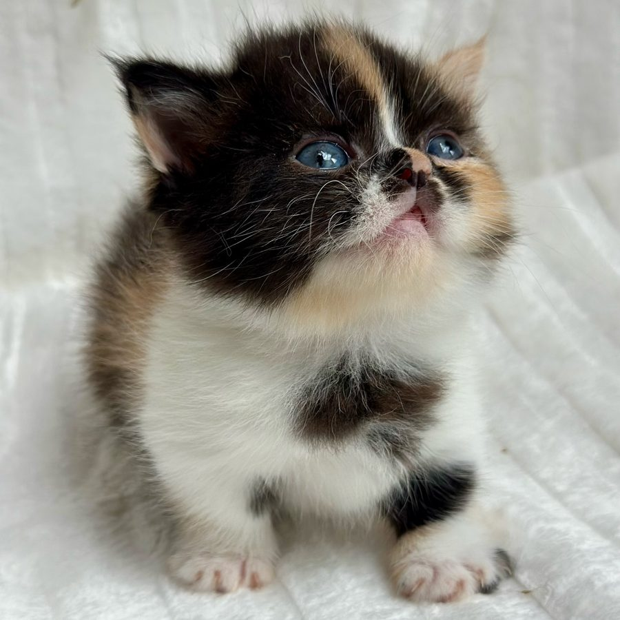

Gato Minuet (Napoleón) en Medellín y Colombia
El Minuet, conocido también como Napoleón, combina patas cortas con una cara redondeada y pelaje abundante. Aquí encuentras cómo es y qué incluye la entrega.

Fotografía de uno de nuestros gatitos.
¿Qué es el Minuet?
El Minuet nace del cruce entre el Munchkin y el Persa. Tiene patas cortas, cuerpo compacto, cara redondeada y pelaje denso y suave, corto o largo. En algunos contextos se le conoce como Napoleón. Nuestros gatos enanos fueron importados de Rusia.
- Genes
- Munchkin y Persa
- Peso adulto
- 2 a 4 kg
- Pelaje
- Denso y suave, corto o largo
- Carácter (según nuestra experiencia)
- Tierno, tranquilo y muy apegado a su familia
- Cuidados
- Cepillado frecuente para mantener el pelaje
- Alergias
- Condición hipoalergénica natural, según nuestra experiencia
Cuidados
Su pelaje denso necesita cepillado frecuente para evitar nudos. Suele encajar en hogares tranquilos. Conviene mantener limpia la zona de los ojos y revisar el pelaje con regularidad.
Salud y garantía
- Vacunado y desparasitado, incluido en la entrega.
- Esterilizado con veterinario certificado en microcirugía.
- Documento de raza y reserva, con garantía de raza y garantía del gatito.
- Acompañamiento y orientación veterinaria después de la entrega.
Muchas familias sensibles a los gatos han convivido bien con nuestros gatitos. Si tienes alergia, ven a conocerlos antes de reservar.
Pide siempre los datos de salud de tu gatito y consulta a tu veterinario de confianza.
Precio y proceso de adquisición
Los gatos enanos tienen un valor de referencia de entre $3.500.000 y $6.500.000 pesos colombianos, según la raza, el gatito y su línea genética. El valor final te lo confirmamos por WhatsApp o llamada. Entregamos en Colombia y orientamos los trámites de envío al exterior. Ver cómo adquirir tu gatito.
Preguntar por Minuet en WhatsApp